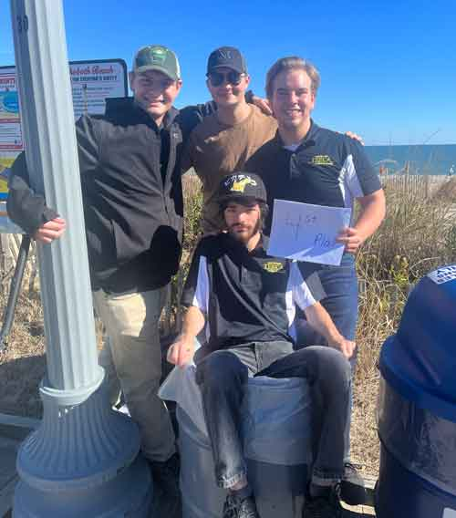

|
|
home -
photography -
printing - video
|
My name is Ian Hollinger and I'm a student at Millersville University. I am a junior and a technology and engineering education major from Elizabethtown, PA. I enjoy music, being outdoors, and disc golf. This portfolio contains work from AENG 110 Communication & Information Systems.

Vineyard Manager at Grandview Vineyard
©:2023 Ian B. Hollinger